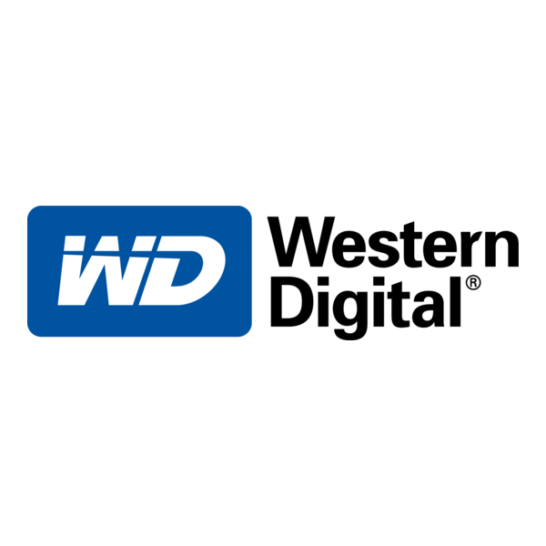

Popularni producenci dysków
Samsung
Samsung to jeden z największych producentów elektroniki i pamięci komputerowych. Firma jest szczególnie znana z produkcji szybkich dysków SSD wykorzystywanych w komputerach domowych i profesjonalnych.
Popularne serie:
- Samsung 870 EVO
- Samsung 990 PRO
- Samsung 980 PRO
Western Digital
Western Digital (WD) to znany producent dysków SSD i HDD. Firma oferuje rozwiązania zarówno do codziennego użytku, jak i do przechowywania dużych ilości danych.
Popularne serie:
- WD Blue
- WD Black
- WD Red
